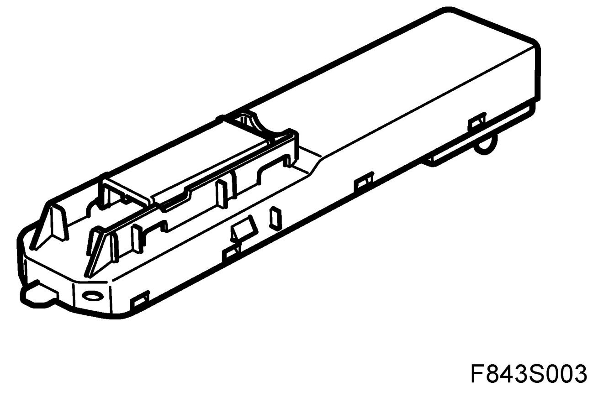
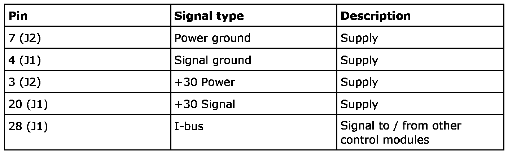
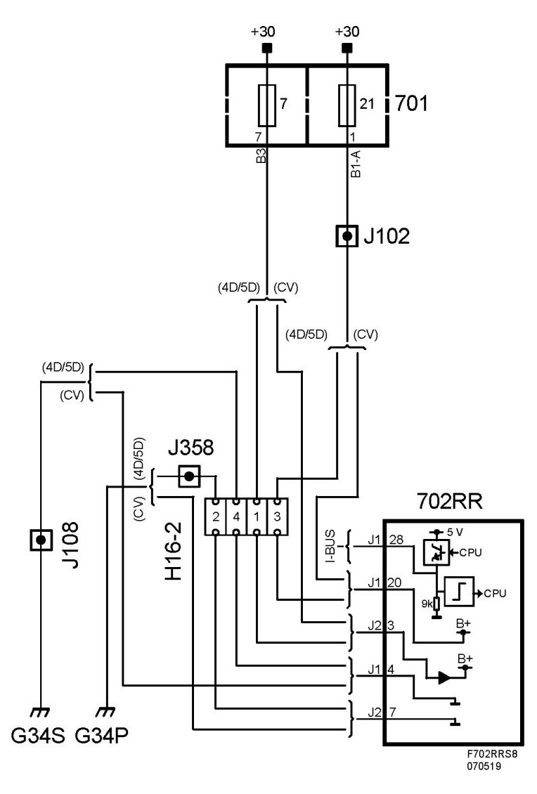

Control Module, Rear Right Window Lift, CV (702RR)
Control Module, Rear Right Window Lift, CV (702RR)
Location
Control module, rear right window lift, CV (702RR)

Main task
The primary function of the RRDM is to control and supply the rear right-hand window lift (with optional pinch protection function).
The RRDM also has logic for the door mirror heater. The activation command is transmitted on the bus.
Type
Internally there is a microprocessor with clock, RAM and a flash EPROM. An internal bus which connects the processor and memory with the I/O unit. The I/O unit is responsible for reading in the values of A/D converted analogue inputs, digital inputs, bus signals and for activating transistors in the output amplifier.
For further information about the control module see control module, general description.
Power supply, ground and bus communication

